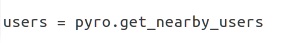
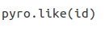
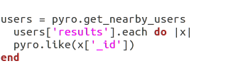
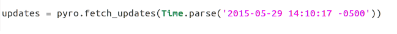
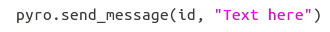

In Part 1 of this tutorial, I explained how to set up your Tinder bot. Now I'll go through some of the ocde examples. A great place to look for references is the tinder_pyro Github page and documentation for the gem.
Getting Nearby Users
To get nearby users, we'll need the get_nearby_users method.
This will return an array ("results") of users that is formatted like this: (please note: I have taken out identifying information, and the photos array usually has more than one photo)
{"distance_mi"=>9, "common_like_count"=>0, "common_friend_count"=>0, "common_likes"=>[], "common_friends"=>[], "_id"=>"user's id", "bio"=>"", "birth_date"=>"1990-02-22T00:00:00.000Z", "gender"=>0, "name"=>"Tanner", "ping_time"=>"2015-05-24T17:05:58.535Z", "photos"=>[{"id"=>"photo's id", "url"=>"photo's url", "main"=>false, "fileName"=>"photo's file name", "extension"=>"jpg", "processedFiles"=>[{"url"=>"url here", "height"=>640, "width"=>640}, {"url"=>"url here", "height"=>320, "width"=>320}, {"url"=>"url here", "height"=>172, "width"=>172}, {"url"=>"url here", "height"=>84, "width"=>84}]},], "birth_date_info"=>"fuzzy birthdate active, not displaying real birth_date"}
Swiping Right
If we want to swipe right on a user, first we'll need their ID which can be retrieved from the user hash I showed above. Then we can pass in that id as an argument into the like function.
Swiping Right on Every Nearby User
if we want to swipe right on every user that gets returned to us, we'll need to iterate over them and use the like method.
get_nearby_users only returns 10 or 11 users, so this will only swipe right to 10 or 11 users at a time. Tinder rate-limits how many swipes you get a day, so if you get rate limited then you'll have to wait 12ish hours.
Getting updates: Matches and Messages
To get the list of matches and updates your bot has, we'll use the fetch_updates method. This method takes in one argument, a time, and will return all updates on your account since that given time. For my bot, I have a log that spits out Time.now during execution, so I can grab that time for when I want to run the bot next.
This method returns a giant hash that I have simplified for you here. "Matches" is an array, so normally there is more than one in this array:
{"matches"=>[{"_id"=>"User ID", "messages"=>[{"_id"=>"Message ID", "match_id"=>"Match ID", "to"=>"To ID", "from"=>"From ID", "message"=>"Incoming message's text will be here.", "sent_date"=>"2015-07-04T19:11:13.707Z", "created_date"=>"2015-07-04T19:11:13.707Z", "timestamp"=>1436037073707}], "last_activity_date"=>"When the user was last online."}], "blocks"=>["Not really sure what this is."], "lists"=>[], "deleted_lists"=>[], "last_activity_date"=>"When the user was last online."}
Sending Messages
To send a message, we'll use the send_message method. It takes two arguments, an ID and the message text. The ID is the User ID of who you want the message to go to, and it can come from the hash returned from the above fetch_updates method.

Questions? Comments? Don't hesitate to contact me!